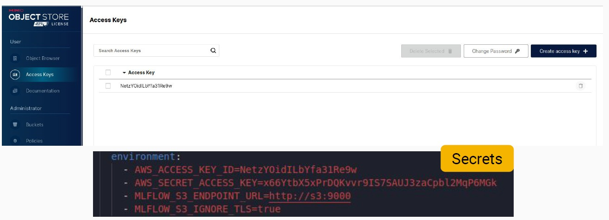
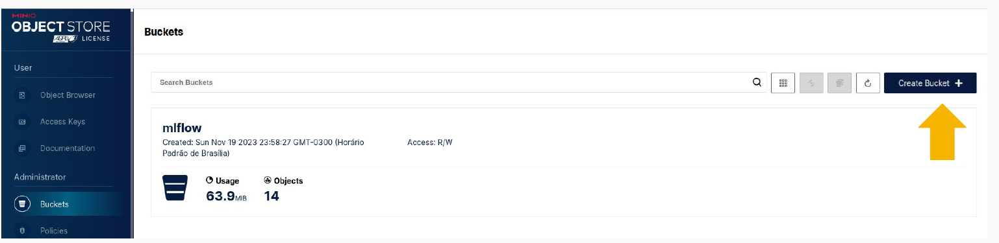
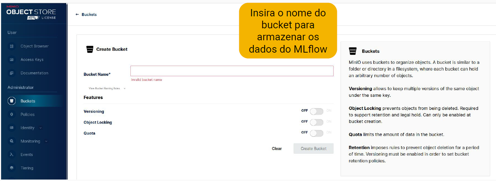

Installation
🔹 About the Project
💧 Water Scan AI is a Machine Learning project that classifies water potability using preprocessing techniques, class balancing, hyperparameter optimization, and model versioning with MLflow.
- Project Name:
water_scan_ai - Author:
tralencar - Version: "1.0.1"
- License:
MIT - Keywords:
quality,water - Data Source: Dataset (Water Quality) from Kaggle.
🔹 Prerequisites
Before installing the project, make sure your environment meets the following requirements:
- Python
>=3.9, <4.0 - Git installed
- Poetry for dependency management
- Make (Makefile support is included in dependencies)
🔹 Installing Dependencies
1️⃣ Clone the repository
git clone https://github.com/tralencar/water_scan_ai.git
cd water_scan_ai
2️⃣ Install Poetry (if not already installed)
pip install poetry
3️⃣ Configure Poetry to create virtual environments in the project folder
poetry config virtualenvs.in-project true
📌 Note:
* This will create a .venv/ folder inside the project directory, helping with isolation and portability.
4️⃣ Activate the virtual environment
poetry shell
5️⃣ Install dependencies
poetry install
📌 Notes:
- This will install all libraries listed in the
pyproject.toml, including: - Data scraping and processing:
pandas,seaborn - Machine Learning and optimization:
scikit-learn,xgboost,lightgbm,optuna,imblearn - Experiment tracking and versioning:
mlflow - Interactive notebooks:
jupyter - Code quality and formatting:
black,isort,flake8,ruff,interrogate - Testing:
pytest,pytest-cov - Version control:
bump2version - Pre-commit hooks:
pre-commit - Documentation:
mkdocs,mkdocs-material,mkdocstrings-python,pymdown-extensions,mkdocs-bootstrap386
🔹 Pre-commit Configuration
Pre-commit helps maintain code quality. To enable it, run:
poetry run pre-commit install
📌 Note:
- From now on, every time you make a commit,
pre-commithooks will run automatically.
🔹 Verifying the Installation
To ensure everything was installed correctly, run:
poetry run python -c "import pandas; print('Installation successful!')"
📌 Note:
- If the message "Installation successful!" appears, everything is properly configured.
🔹 MinIO + MLflow Integration Setup
To ensure secure model versioning, the Water Scan AI project uses MinIO as the artifact store for MLflow, simulating an S3-compatible interface. Model and metadata persistence is handled by:
- MinIO (S3-like storage for artifacts such as
.pkl,.onnxmodels, images, metrics, etc.) - PostgreSQL (backend store for logs, parameters, and experiment runs)
🔹 Creating an Access Key in MinIO
Access the MinIO dashboard (locally at http://localhost:9001) and create a new access key in the Access Keys menu.
Below is an example of the MinIO access screen and the corresponding environment variable configuration:

⚠️ Make sure the environment variables AWS_ACCESS_KEY_ID and AWS_SECRET_ACCESS_KEY match those in the tracking_server section of your docker-compose.yml.
🔹 Creating a Bucket in MinIO
After configuring the access credentials, you need to create a bucket in MinIO to store MLflow experiment artifacts (models, metrics, images, logs, etc.).
Step 1: Click "Create Bucket"
Open the MinIO interface, go to the Buckets section in the sidebar, and click the Create Bucket button as shown below:
Follow these steps according to the image:
- Access the MinIO admin panel at the local link
- In the sidebar, click Buckets
- Click the Create Bucket button (as highlighted below)
- Name the bucket
mlflow(or another name, but be sure it matches theartifacts-destinationvariable defined indocker-compose.yml)

Step 2: Enter the Bucket Name
Suggested name: mlflow

📌 Notes (Important rules for bucket naming):
- Must be in lowercase
- No spaces
- Avoid special characters
- Use a simple name like
mlflow,experiments,models, etc.
⚠️ Make sure the bucket name exactly matches the artifacts-destination value and the bucket name configured in the tracking_server of docker-compose.yml.
✅ MLflow is now ready to store and version artifacts directly in the mlflow bucket on MinIO!